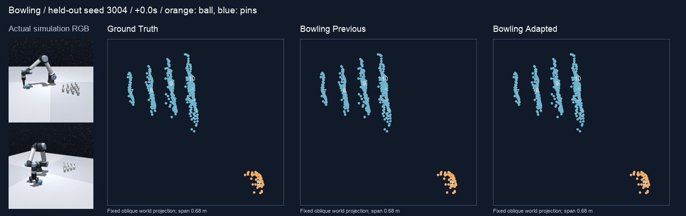
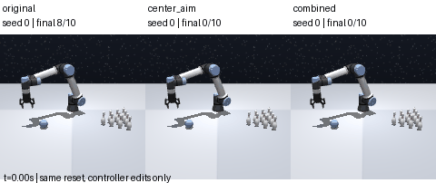
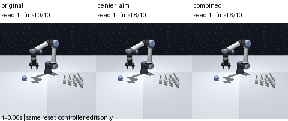
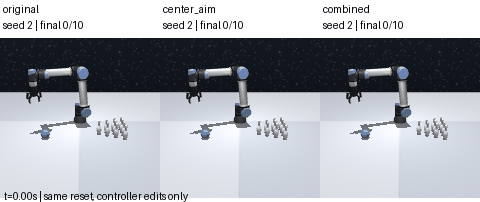

<!doctype html><html lang="zh-CN"><meta charset="utf-8"><meta name="viewport" content="width=device-width,initial-scale=1">
<title>Bowling：为什么未来预测失败</title><style>
:root{color-scheme:light dark;--bg:#fff;--fg:#242a30;--muted:#59646e;--line:#d7dde2;--accent:#216180}@media(prefers-color-scheme:dark){:root{--bg:#192025;--fg:#e2e8ed;--muted:#a9b6bf;--line:#3b464e;--accent:#91c8df}}
*{box-sizing:border-box}body{margin:0;background:var(--bg);color:var(--fg);font:16px/1.65 system-ui,sans-serif}main{max-width:1200px;padding:24px;margin:auto}h1{font-size:28px}h2{font-size:21px;margin-top:28px}a{color:var(--accent)}nav{display:flex;gap:18px;flex-wrap:wrap}p{margin:8px 0}.caption{color:var(--muted);font-size:13px}.grid{display:grid;grid-template-columns:1fr 1fr;gap:30px}img{max-width:100%;height:auto}svg{width:100%;height:auto}text{fill:var(--muted);font-size:12px}button,select{font:inherit;padding:6px;background:var(--bg);color:var(--fg);border:1px solid var(--line)}table{border-collapse:collapse;width:100%;font-size:14px}th,td{padding:9px;text-align:left;border-bottom:1px solid var(--line)}.scroll{overflow:auto}details{margin:20px 0}summary{cursor:pointer}@media(max-width:760px){.grid{grid-template-columns:1fr}main{padding:16px}}
</style><main><nav><button id="language">English</button><a href="../">Bowling 任务 / task</a><a href="README.zh.md">中文报告</a><a href="README.en.md">English report</a><a href="bowling_failure.json">数字与来源 / evidence</a></nav>
<h1 data-zh="模型抑制了误动，但丢掉了碰撞响应" data-en="The model suppresses false motion but loses collision response"></h1>
<p data-zh="本次主要分析 PointWorld Bowling v3：选模偏向保守解，入射球预测也已偏离。结构和数据覆盖是待验证因素；没有新训练、GPU 推理或重新选择测试权重。" data-en="Analysis of PointWorld Bowling v3: selection favors conservative predictions, while the incoming ball is inaccurate. Architecture and data coverage are hypotheses; no new training, GPU inference or test-driven checkpoint selection."></p>
<p class="caption" data-zh="2026-10-12 · 原有 30 条新测试 / 16 条验证 · 原始模型输出和物理标签不变" data-en="2026-10-12 · Existing fresh30 / validation16 · Raw model outputs and physics labels unchanged"></p>
<div class="grid"><section><h2 data-zh="整体误差下降，不代表动态预测成功" data-en="Lower aggregate error does not establish dynamic success"></h2><div class="scroll"><table><thead><tr><th>Fresh30 · 4s</th><th>v2</th><th>v3</th><th data-zh="不动基线" data-en="Stationary"></th></tr></thead><tbody><tr><td data-zh="全瓶平均误差（cm）" data-en="All-pin ADE (cm)"></td><td>4.13</td><td>2.00</td><td>1.54</td></tr><tr><td data-zh="运动瓶平均误差（cm）" data-en="Moving-pin ADE (cm)"></td><td>5.34</td><td>5.23</td><td>5.46</td></tr><tr><td data-zh="运动瓶末帧误差（cm）" data-en="Moving-pin FDE (cm)"></td><td>11.83</td><td>14.08</td><td>15.14</td></tr><tr><td data-zh="检出真实倒瓶 / 76" data-en="Detected GT tips / 76"></td><td>53</td><td>0</td><td>0</td></tr></tbody></table></div>
<p data-zh="v3 的运动瓶 ADE 比不动改善仅 2.32 mm。真实路径诊断仍漏掉全部倒瓶，机器人计划误差不是唯一原因。" data-en="Moving ADE gains only 2.32 mm over stationary. The realized-robot-path diagnostic still misses every tip: robot plan error is not the sole cause."></p></section>
<figure><a href="../../pointworld/bowling-v3/"></a><figcaption class="caption" data-zh="seed3004：7 瓶实际运动 / 6 瓶倾倒；v3 展示瓶点最大平均位移仅 0.58–0.72 cm。GIF 是真实预测，点击看原评测页面。" data-en="Seed3004: 7 moving / 6 tipped GT pins. V3 display points move only 0.58–0.72 cm at maximum on average. Actual predictions; click for the original evaluation."></figcaption></figure></div>
<h2 data-zh="验证曲线：更会动的 checkpoint 被淘汰" data-en="Validation: checkpoints with dynamic response were rejected"></h2>
<p data-zh="1500 步被选中，48 个倒瓶全漏；2750 步检出 24 个，但误动更多。新算出的不动基线分数 3.82 cm，比所有网络 checkpoint 都好；选中模型为 4.37 cm。" data-en="Step1500 is selected and misses all 48 tips. Step2750 detects 24 but has more false motion. Recomputed stationary score 3.82 cm beats every network checkpoint; selected score 4.37 cm."></p>
<select id="metric"><option value="moving_pin_ADE_m">Moving-pin ADE / 运动瓶平均误差</option><option value="moving_pin_FDE_m">Moving-pin FDE / 运动瓶末帧误差</option><option value="selection_score_m">Selection score / 选模分数</option></select>
<div class="grid"><section><h3 id="chart-title"></h3><svg id="errors" viewBox="0 0 540 290" role="img"></svg><p class="caption" data-zh="实线：验证误差；虚线：不动基线；竖线：选择步数1500。先逐瓶再逐轨迹平均，分数按既有公式重算。" data-en="Solid: validation error; dashed: stationary; vertical: selected step1500. Macro-averaged over pins/episodes; score recomputed with the existing formula."></p></section><section><h3 data-zh="倒瓶召回与静止误动率（%）" data-en="Tipping recall and static false-motion rate (%)"></h3><svg id="events" viewBox="0 0 540 290" role="img"></svg><p class="caption" data-zh="实线：48 个倒瓶的检出比例；虚线：静止瓶误动率（按轨迹平均）。来源：Bowling v3 已记录验证，step0–3000。" data-en="Solid: recall of 48 GT tips; dashed: episode-macro static false-motion rate. Source: logged Bowling v3 validation, step 0–3000."></p></section></div>
<h2 data-zh="接触前球已错，历史还没接入" data-en="The ball is already wrong before contact; history is not connected"></h2><div class="grid"><section><p data-zh="碰撞前球点 ADE 为 7.89 cm；最后一个接触前输出的可见点质心误差 14.11 cm（不是球心），球半径4.25 cm。先排查机器人→球，再排查球→瓶和瓶→瓶。" data-en="Precontact ball-point ADE 7.89 cm; last-precontact visible-point centroid error 14.11 cm (not fitted ball center), ball radius 4.25 cm. Isolate robot→ball before ball→pin and pin→pin."></p><p data-zh="206 条训练中94条有运动瓶；只有12.8%的瓶–时刻发生明显运动。平均损失权重：运动瓶18.9%，球42.2%；不能把它等同于梯度贡献。" data-en="94 of 206 training episodes contain moving pins; only 12.8% of pin–time slots move appreciably. Moving pins carry 18.9% of average loss-weight mass; ball 42.2%. These are not gradient contributions."></p></section><section><p data-zh="当前仅一帧场景，预测器一次输出10步，每0.4秒一帧、共4秒；没有contact/phase loss。PointTransformer有跨点attention，但传播和旋转需要隐式学到。" data-en="One scene frame; one head predicts 10 future steps at 0.4 s, over 4 s, without contact/phase loss. PointTransformer has cross-point attention; propagation and rotation are implicit."></p><p data-zh="球在query时近零速度，这轮不能验证4D MAE的历史收益。下一步：小训练集过拟合检查、短期碰撞分解、冻结新的验证折中、推出后H0/H-self/H-all配对。尚未执行。" data-en="The ball is stationary at query; this run does not test 4D MAE history benefits. Next: tiny-training-set overfit, short collision stages, frozen validation tradeoffs, and post-launch H0/H-self/H-all pairs. Proposed, not executed."></p></section></div>
<details><summary data-zh="另一件事：最早三条专家示范为何有零分" data-en="Separate issue: why early expert demonstrations score zero"></summary><p data-zh="这不是学习模型。seed1偏右，中心瞄准0→8瓶；seed2释放方向偏46°，小对照未救回。去掉所有扰动也不稳定，combined为0/6/0。15条同reset CPU诊断不能估计总体成功率。" data-en="These are not learned forecasts. Seed1 aims right; center aim changes0→8 pins. Seed2 releases 46° off; small interventions do not recover it. Combined neutralization gives0/6/0: unstable. Fifteen same-reset CPU diagnostics do not estimate population success."></p><div class="grid"><figure><figcaption class="caption">Seed 0 · original / center_aim / combined · 1×</figcaption></figure><figure><figcaption class="caption">Seed 1 · original / center_aim / combined · 1×</figcaption></figure><figure><figcaption class="caption">Seed 2 · original / center_aim / combined · 1×</figcaption></figure></div><a href="bowling_expert_diagnosis.json">Expert controller numerical record</a></details>
<nav><a href="README.zh.md">中文完整推理与排查顺序</a><a href="README.en.md">Full English reasoning</a><a href="../../pointworld/bowling-v3-diagnostic/">Realized-path diagnostic</a></nav>
</main><script id="data" type="application/json">{"scope": "Existing Bowling v3 model failure analysis; no new model inference or training", "sources_sha256": {"reports/bowling-v3-results.json": "cf58accff34e56ab8f87094a146dd719ad5d1f912abbc1b0706cf86f28b2a751", "reports/bowling-v3-diagnostic-results.json": "8f35b433906a789073a0117e60e09d3654d516ecdb3ef3ce15e2ab83fccb7921", "reports/bowling-v3-data-audit.json": "bc7335c93b7d467e1a0b8a62fd5a29a41f78b6c7091b640197b59ba046f4ab9e", "reports/bowling-v2-data-audit.json": "7cd9f0306986df288d0e1af04b44256dff94e00f785073d0238db6e5533e1866", "reports/bowling-v3-contact-diagnosis.json": "7b7d1e9b89617442f10430df552bb01ebb5247f566b36371dffb029fa0d673d8", "prepared_manifest": "174736d584dd5cee0be9bb5df297a892b13af1038d471e2ab5b1735b431288ce"}, "training_source_commit": "ef870090576f7fd771167e653663a8bbb5b161c0", "source_checkout_at_review": "2d45b414112ca0d4e60a77026b27906444e6bda0", "selected_step": 1500, "context_frames": 1, "prediction_dt_s": 0.4000000059604645, "horizon_s": 4.0, "splits": {"train": 206, "validation": 16, "test": 44, "fresh_test": 30}, "train_moving_episodes": 94, "train_episodes": 206, "train_moving_pin_frame_fraction": 0.12796116504854368, "mean_training_weight_mass": {"ball": 0.4216196230448802, "ever_moving_pins": 0.1893334801305476, "never_moving_pins": 0.23946305663340775, "background": 0.1495838401911646}, "validation": [{"episodes": 16, "moving_episodes": 8, "pin_ADE_m": 0.04217343355412595, "pin_FDE_m": 0.06850009289046283, "moving_pin_ADE_m": 0.07076346955339735, "moving_pin_FDE_m": 0.15728978098939278, "ball_ADE_m": 0.2856862861663103, "derived_count_absolute_error": 3.0, "rigid_fit_residual_m": 0.00894144545912634, "static_pin_false_motion_rate": 0.8266666666666667, "derived_tipping_tp": 0, "derived_tipping_fp": 0, "derived_tipping_fn": 48, "derived_tipping_F1": 0.0, "moving_episodes_only_pin_ADE_m": 0.05407250612624921, "step": 0, "selection_score_m": 0.07300178488709498}, {"episodes": 16, "moving_episodes": 8, "pin_ADE_m": 0.026410009333631024, "pin_FDE_m": 0.05685883997357451, "moving_pin_ADE_m": 0.05539186076105883, "moving_pin_FDE_m": 0.1369204479088593, "ball_ADE_m": 0.19778101379051805, "derived_count_absolute_error": 3.0, "rigid_fit_residual_m": 0.003502345590258033, "static_pin_false_motion_rate": 0.5883333333333333, "derived_tipping_tp": 0, "derived_tipping_fp": 0, "derived_tipping_fn": 48, "derived_tipping_F1": 0.0, "moving_episodes_only_pin_ADE_m": 0.04050197433680296, "step": 250, "selection_score_m": 0.052667601714011594}, {"episodes": 16, "moving_episodes": 8, "pin_ADE_m": 0.02422796017781366, "pin_FDE_m": 0.053040727393818085, "moving_pin_ADE_m": 0.05503307080750043, "moving_pin_FDE_m": 0.1378565624796061, "ball_ADE_m": 0.20095625147223473, "derived_count_absolute_error": 3.0, "rigid_fit_residual_m": 0.002586320392212143, "static_pin_false_motion_rate": 0.26, "derived_tipping_tp": 0, "derived_tipping_fp": 0, "derived_tipping_fn": 48, "derived_tipping_F1": 0.0, "moving_episodes_only_pin_ADE_m": 0.03979008494061417, "step": 500, "selection_score_m": 0.04483051549265705}, {"episodes": 16, "moving_episodes": 8, "pin_ADE_m": 0.024529819685267285, "pin_FDE_m": 0.0532204470000579, "moving_pin_ADE_m": 0.05505560100492504, "moving_pin_FDE_m": 0.13740576883881456, "ball_ADE_m": 0.15609712339937687, "derived_count_absolute_error": 3.0, "rigid_fit_residual_m": 0.0026416730083403455, "static_pin_false_motion_rate": 0.42499999999999993, "derived_tipping_tp": 0, "derived_tipping_fp": 0, "derived_tipping_fn": 48, "derived_tipping_F1": 0.0, "moving_episodes_only_pin_ADE_m": 0.040306133317062634, "step": 750, "selection_score_m": 0.04829271034509616}, {"episodes": 16, "moving_episodes": 8, "pin_ADE_m": 0.0254297283856431, "pin_FDE_m": 0.052649107167962936, "moving_pin_ADE_m": 0.054267707668865725, "moving_pin_FDE_m": 0.13099735242366378, "ball_ADE_m": 0.15040618111379445, "derived_count_absolute_error": 3.0, "rigid_fit_residual_m": 0.003896094365763039, "static_pin_false_motion_rate": 0.45499999999999996, "derived_tipping_tp": 0, "derived_tipping_fp": 0, "derived_tipping_fn": 48, "derived_tipping_F1": 0.0, "moving_episodes_only_pin_ADE_m": 0.0418481202039402, "step": 1000, "selection_score_m": 0.04894871802725441}, {"episodes": 16, "moving_episodes": 8, "pin_ADE_m": 0.027845411203452387, "pin_FDE_m": 0.0555926050976268, "moving_pin_ADE_m": 0.05297490262633396, "moving_pin_FDE_m": 0.12245187415974215, "ball_ADE_m": 0.16623124247416854, "derived_count_absolute_error": 3.0, "rigid_fit_residual_m": 0.004877834921570748, "static_pin_false_motion_rate": 0.6533333333333334, "derived_tipping_tp": 0, "derived_tipping_fp": 0, "derived_tipping_fn": 48, "derived_tipping_F1": 0.0, "moving_episodes_only_pin_ADE_m": 0.04325216726283543, "step": 1250, "selection_score_m": 0.05347682358155985}, {"episodes": 16, "moving_episodes": 8, "pin_ADE_m": 0.02221722712274641, "pin_FDE_m": 0.04955809154635062, "moving_pin_ADE_m": 0.0544264228341894, "moving_pin_FDE_m": 0.1370960569060925, "ball_ADE_m": 0.15551621187478304, "derived_count_absolute_error": 3.0, "rigid_fit_residual_m": 0.00240208980196098, "static_pin_false_motion_rate": 0.26666666666666666, "derived_tipping_tp": 0, "derived_tipping_fp": 0, "derived_tipping_fn": 48, "derived_tipping_F1": 0.0, "moving_episodes_only_pin_ADE_m": 0.03965982297959272, "step": 1500, "selection_score_m": 0.043655158311801244}, {"episodes": 16, "moving_episodes": 8, "pin_ADE_m": 0.029117927135666834, "pin_FDE_m": 0.05520528218039544, "moving_pin_ADE_m": 0.053311248586073307, "moving_pin_FDE_m": 0.11390099278521827, "ball_ADE_m": 0.14428564673289657, "derived_count_absolute_error": 2.5, "rigid_fit_residual_m": 0.005582985449363304, "static_pin_false_motion_rate": 0.6133333333333334, "derived_tipping_tp": 6, "derived_tipping_fp": 2, "derived_tipping_fn": 42, "derived_tipping_F1": 0.21428571428571427, "moving_episodes_only_pin_ADE_m": 0.04672781141125597, "step": 1750, "selection_score_m": 0.053481254527536735}, {"episodes": 16, "moving_episodes": 8, "pin_ADE_m": 0.02511643436009763, "pin_FDE_m": 0.05112409791545361, "moving_pin_ADE_m": 0.05330402641815858, "moving_pin_FDE_m": 0.12359219783296187, "ball_ADE_m": 0.14017056697048247, "derived_count_absolute_error": 2.9375, "rigid_fit_residual_m": 0.0039060870032484925, "static_pin_false_motion_rate": 0.44666666666666666, "derived_tipping_tp": 0, "derived_tipping_fp": 1, "derived_tipping_fn": 48, "derived_tipping_F1": 0.0, "moving_episodes_only_pin_ADE_m": 0.043777553422842175, "step": 2000, "selection_score_m": 0.04814356372246144}, {"episodes": 16, "moving_episodes": 8, "pin_ADE_m": 0.02235082961560693, "pin_FDE_m": 0.04918236924277153, "moving_pin_ADE_m": 0.05406808713321677, "moving_pin_FDE_m": 0.13419359896021585, "ball_ADE_m": 0.17526720045134425, "derived_count_absolute_error": 2.9375, "rigid_fit_residual_m": 0.003097609822144412, "static_pin_false_motion_rate": 0.31666666666666665, "derived_tipping_tp": 0, "derived_tipping_fp": 1, "derived_tipping_fn": 48, "derived_tipping_F1": 0.0, "moving_episodes_only_pin_ADE_m": 0.03936108354246244, "step": 2250, "selection_score_m": 0.04454279170774518}, {"episodes": 16, "moving_episodes": 8, "pin_ADE_m": 0.023130264863721096, "pin_FDE_m": 0.049757490561751175, "moving_pin_ADE_m": 0.053476781260299804, "moving_pin_FDE_m": 0.1309706799634215, "ball_ADE_m": 0.15424170508049428, "derived_count_absolute_error": 2.8125, "rigid_fit_residual_m": 0.003420247652820855, "static_pin_false_motion_rate": 0.2916666666666667, "derived_tipping_tp": 0, "derived_tipping_fp": 3, "derived_tipping_fn": 48, "derived_tipping_F1": 0.0, "moving_episodes_only_pin_ADE_m": 0.040763490399695, "step": 2500, "selection_score_m": 0.04413685639534379}, {"episodes": 16, "moving_episodes": 8, "pin_ADE_m": 0.0280320877340273, "pin_FDE_m": 0.05257743889669654, "moving_pin_ADE_m": 0.051428354918930885, "moving_pin_FDE_m": 0.10789388083826958, "ball_ADE_m": 0.14650005288422108, "derived_count_absolute_error": 1.9375, "rigid_fit_residual_m": 0.006072935987640436, "static_pin_false_motion_rate": 0.5616666666666668, "derived_tipping_tp": 24, "derived_tipping_fp": 19, "derived_tipping_fn": 24, "derived_tipping_F1": 0.5274725274725275, "moving_episodes_only_pin_ADE_m": 0.04548067128052935, "step": 2750, "selection_score_m": 0.05096355465981242}, {"episodes": 16, "moving_episodes": 8, "pin_ADE_m": 0.02533916756583494, "pin_FDE_m": 0.051494941997952993, "moving_pin_ADE_m": 0.05197806873022475, "moving_pin_FDE_m": 0.11921377762272539, "ball_ADE_m": 0.16113713383674622, "derived_count_absolute_error": 2.25, "rigid_fit_residual_m": 0.00493702259024806, "static_pin_false_motion_rate": 0.5116666666666667, "derived_tipping_tp": 13, "derived_tipping_fp": 9, "derived_tipping_fn": 35, "derived_tipping_F1": 0.37142857142857144, "moving_episodes_only_pin_ADE_m": 0.04285494390060194, "step": 3000, "selection_score_m": 0.048891951481363174}], "validation_stationary": {"episodes": 16, "moving_episodes": 8, "pin_ADE_m": 0.01887820136635128, "pin_FDE_m": 0.04793933456157902, "moving_pin_ADE_m": 0.05755139659288236, "moving_pin_FDE_m": 0.15163713533224332, "ball_ADE_m": 0.5236943550407887, "derived_count_absolute_error": 3.0, "rigid_fit_residual_m": 1.1255745586677267e-09, "static_pin_false_motion_rate": 0.0, "derived_tipping_tp": 0, "derived_tipping_fp": 0, "derived_tipping_fn": 48, "derived_tipping_F1": 0.0, "moving_episodes_only_pin_ADE_m": 0.03752519812405808}, "validation_stationary_selection_score_m": 0.03821479897961682, "fresh_test": {"pretrained": {"episodes": 30, "moving_episodes": 18, "pin_ADE_m": 0.03841445895532767, "pin_FDE_m": 0.06030095733003691, "moving_pin_ADE_m": 0.06951001525825345, "moving_pin_FDE_m": 0.1545270904906856, "ball_ADE_m": 0.328609357525905, "derived_count_absolute_error": 2.566666666666667, "rigid_fit_residual_m": 0.009155638744977287, "static_pin_false_motion_rate": 0.8929629629629631, "derived_tipping_tp": 0, "derived_tipping_fp": 3, "derived_tipping_fn": 76, "derived_tipping_F1": 0.0, "moving_episodes_only_pin_ADE_m": 0.04373649654185607}, "stationary": {"episodes": 30, "moving_episodes": 18, "pin_ADE_m": 0.015433291651279433, "pin_FDE_m": 0.040816462644846375, "moving_pin_ADE_m": 0.05459928071045036, "moving_pin_FDE_m": 0.1514051664349618, "ball_ADE_m": 0.5509111195802688, "derived_count_absolute_error": 2.533333333333333, "rigid_fit_residual_m": 1.2531099534746034e-09, "static_pin_false_motion_rate": 0.0, "derived_tipping_tp": 0, "derived_tipping_fp": 0, "derived_tipping_fn": 76, "derived_tipping_F1": 0.0, "moving_episodes_only_pin_ADE_m": 0.025564665899138264}, "bowling_previous": {"episodes": 30, "moving_episodes": 18, "pin_ADE_m": 0.04127319846923153, "pin_FDE_m": 0.07586128493150075, "moving_pin_ADE_m": 0.053370031696289275, "moving_pin_FDE_m": 0.11832142863324077, "ball_ADE_m": 0.18077684218684834, "derived_count_absolute_error": 3.8333333333333335, "rigid_fit_residual_m": 0.009894664544742785, "static_pin_false_motion_rate": 1.0, "derived_tipping_tp": 53, "derived_tipping_fp": 116, "derived_tipping_fn": 23, "derived_tipping_F1": 0.4326530612244898, "moving_episodes_only_pin_ADE_m": 0.04483951470918126}, "bowling_adapted": {"episodes": 30, "moving_episodes": 18, "pin_ADE_m": 0.020028458963303516, "pin_FDE_m": 0.04585321067366748, "moving_pin_ADE_m": 0.05228121962453316, "moving_pin_FDE_m": 0.14075043483619204, "ball_ADE_m": 0.18694272314508756, "derived_count_absolute_error": 2.533333333333333, "rigid_fit_residual_m": 0.0022218780607478287, "static_pin_false_motion_rate": 0.25592592592592595, "derived_tipping_tp": 0, "derived_tipping_fp": 0, "derived_tipping_fn": 76, "derived_tipping_F1": 0.0, "moving_episodes_only_pin_ADE_m": 0.02935483204200864}}, "realized_diagnostic": {"episodes": 30, "moving_episodes": 18, "pin_ADE_m": 0.02079668489129593, "pin_FDE_m": 0.04661892198181402, "moving_pin_ADE_m": 0.05391892556354035, "moving_pin_FDE_m": 0.1435687659500492, "ball_ADE_m": 0.21702519084016483, "derived_count_absolute_error": 2.533333333333333, "rigid_fit_residual_m": 0.0027213782679011192, "static_pin_false_motion_rate": 0.07740740740740741, "derived_tipping_tp": 0, "derived_tipping_fp": 0, "derived_tipping_fn": 76, "derived_tipping_F1": 0.0, "moving_episodes_only_pin_ADE_m": 0.029336699372571377}, "contact_diagnosis": {"nominal/pretrained": {"episodes": 30, "moving_episodes": 18, "moving_episodes_with_pin_false_motion_before_contact": 18, "quiet_pins": 120, "quiet_false_motion_pins": 101, "static_pins": 205, "static_false_motion_pins": 182, "ball_contact_episodes_with_precontact_samples": 18, "precontact_ball_ADE_m": 0.13640693864888614, "last_precontact_ball_centroid_error_m": 0.2984038086401092}, "nominal/stationary": {"episodes": 30, "moving_episodes": 18, "moving_episodes_with_pin_false_motion_before_contact": 0, "quiet_pins": 120, "quiet_false_motion_pins": 0, "static_pins": 205, "static_false_motion_pins": 0, "ball_contact_episodes_with_precontact_samples": 18, "precontact_ball_ADE_m": 0.308456663456228, "last_precontact_ball_centroid_error_m": 0.608865436580446}, "nominal/bowling_previous": {"episodes": 30, "moving_episodes": 18, "moving_episodes_with_pin_false_motion_before_contact": 17, "quiet_pins": 120, "quiet_false_motion_pins": 120, "static_pins": 205, "static_false_motion_pins": 205, "ball_contact_episodes_with_precontact_samples": 18, "precontact_ball_ADE_m": 0.07014921680092812, "last_precontact_ball_centroid_error_m": 0.11992657567477888}, "nominal/bowling_adapted": {"episodes": 30, "moving_episodes": 18, "moving_episodes_with_pin_false_motion_before_contact": 0, "quiet_pins": 120, "quiet_false_motion_pins": 9, "static_pins": 205, "static_false_motion_pins": 44, "ball_contact_episodes_with_precontact_samples": 18, "precontact_ball_ADE_m": 0.07892286570535766, "last_precontact_ball_centroid_error_m": 0.1411024553494321}, "realized/pretrained": {"episodes": 30, "moving_episodes": 18, "moving_episodes_with_pin_false_motion_before_contact": 18, "quiet_pins": 120, "quiet_false_motion_pins": 97, "static_pins": 205, "static_false_motion_pins": 171, "ball_contact_episodes_with_precontact_samples": 18, "precontact_ball_ADE_m": 0.1355446692970064, "last_precontact_ball_centroid_error_m": 0.3003410796324412}, "realized/stationary": {"episodes": 30, "moving_episodes": 18, "moving_episodes_with_pin_false_motion_before_contact": 0, "quiet_pins": 120, "quiet_false_motion_pins": 0, "static_pins": 205, "static_false_motion_pins": 0, "ball_contact_episodes_with_precontact_samples": 18, "precontact_ball_ADE_m": 0.308456663456228, "last_precontact_ball_centroid_error_m": 0.608865436580446}, "realized/bowling_previous": {"episodes": 30, "moving_episodes": 18, "moving_episodes_with_pin_false_motion_before_contact": 1, "quiet_pins": 120, "quiet_false_motion_pins": 8, "static_pins": 205, "static_false_motion_pins": 46, "ball_contact_episodes_with_precontact_samples": 18, "precontact_ball_ADE_m": 0.07546526504059632, "last_precontact_ball_centroid_error_m": 0.1322770066973236}, "realized/bowling_adapted": {"episodes": 30, "moving_episodes": 18, "moving_episodes_with_pin_false_motion_before_contact": 0, "quiet_pins": 120, "quiet_false_motion_pins": 1, "static_pins": 205, "static_false_motion_pins": 11, "ball_contact_episodes_with_precontact_samples": 18, "precontact_ball_ADE_m": 0.11207033134996891, "last_precontact_ball_centroid_error_m": 0.2206351901921961}}, "moving_pin_ADE_benefit_vs_stationary": {"episodes": 18, "mean_m": 0.0023180610859172, "paired_episode_bootstrap_95CI_m": [0.0002686082863306781, 0.00459419924195041], "bootstrap_samples": 10000, "seed": 20261012, "note": "Exploratory already-inspected fresh30; resample the 18 moving episodes, not individual points/windows"}, "seed3004_display_subset": [{"pin": 0, "display_points": 45, "pred_max_mean_displacement_m": 0.0065630655735731125, "gt_max_mean_displacement_m": 0.12586700916290283}, {"pin": 1, "display_points": 45, "pred_max_mean_displacement_m": 0.006308869458734989, "gt_max_mean_displacement_m": 0.00021953920077066869}, {"pin": 2, "display_points": 45, "pred_max_mean_displacement_m": 0.006189324893057346, "gt_max_mean_displacement_m": 0.2483351230621338}, {"pin": 3, "display_points": 45, "pred_max_mean_displacement_m": 0.005830683745443821, "gt_max_mean_displacement_m": 0.0003844618331640959}, {"pin": 4, "display_points": 45, "pred_max_mean_displacement_m": 0.006298254709690809, "gt_max_mean_displacement_m": 0.14480531215667725}, {"pin": 5, "display_points": 45, "pred_max_mean_displacement_m": 0.006109158042818308, "gt_max_mean_displacement_m": 0.12654833495616913}, {"pin": 6, "display_points": 45, "pred_max_mean_displacement_m": 0.006052815355360508, "gt_max_mean_displacement_m": 0.00039432611083611846}, {"pin": 7, "display_points": 45, "pred_max_mean_displacement_m": 0.006534706801176071, "gt_max_mean_displacement_m": 0.031092675402760506}, {"pin": 8, "display_points": 45, "pred_max_mean_displacement_m": 0.0067487433552742004, "gt_max_mean_displacement_m": 0.12184562534093857}, {"pin": 9, "display_points": 45, "pred_max_mean_displacement_m": 0.0071509825065732, "gt_max_mean_displacement_m": 0.171322762966156}], "interpretation": ["Selected checkpoint misses all tips; later validation checkpoint has nonzero recall but worse selection score.", "Stationary baseline scores better than every logged validation checkpoint under the present formula.", "Upstream ball error and static-biased forecasting coexist; their causal contributions are not isolated.", "No-history architecture and one-frame data do not evaluate 4D MAE history benefits. All query balls are stationary."]}</script><script>
const d=JSON.parse(document.getElementById('data').textContent);let zh=true;const ns='http://www.w3.org/2000/svg';
function add(svg,tag,attrs,text){const n=document.createElementNS(ns,tag);Object.entries(attrs).forEach(([k,v])=>n.setAttribute(k,v));if(text!==undefined)n.textContent=text;svg.append(n);return n}
function plot(svg,series,max,ylabel,baseline){svg.replaceChildren();const x=v=>55+v/3000*455,y=v=>240-v/max*200;
for(let i=0;i<=4;i++){let v=max*i/4;add(svg,'line',{x1:55,x2:510,y1:y(v),y2:y(v),stroke:'var(--line)'});add(svg,'text',{x:47,y:y(v)+4,'text-anchor':'end'},v.toFixed(1))}
[0,750,1500,2250,3000].forEach(v=>add(svg,'text',{x:x(v),y:260,'text-anchor':'middle'},v));add(svg,'text',{x:280,y:284,'text-anchor':'middle'},zh?'训练更新步数':'Training update step');add(svg,'text',{x:55,y:20},ylabel);
add(svg,'line',{x1:x(1500),x2:x(1500),y1:40,y2:240,stroke:'var(--line)','stroke-dasharray':'2 3'});
if(baseline!==undefined)add(svg,'line',{x1:55,x2:510,y1:y(baseline),y2:y(baseline),stroke:'var(--muted)','stroke-dasharray':'6 4'});
series.forEach((s,i)=>{add(svg,'polyline',{points:s.map((v,j)=>x(d.validation[j].step)+','+y(v)).join(' '),fill:'none',stroke:i?'var(--muted)':'var(--accent)','stroke-width':2,'stroke-dasharray':i?'6 4':''});s.forEach((v,j)=>{const p=add(svg,'circle',{cx:x(d.validation[j].step),cy:y(v),r:3,fill:i?'var(--muted)':'var(--accent)'});const t=document.createElementNS(ns,'title');t.textContent=d.validation[j].step+' / '+v.toFixed(2);p.append(t)})})}
function render(){document.documentElement.lang=zh?'zh-CN':'en';document.querySelectorAll('[data-zh]').forEach(n=>n.textContent=n.dataset[zh?'zh':'en']);document.getElementById('language').textContent=zh?'English':'中文';const m=document.getElementById('metric').value;document.getElementById('chart-title').textContent=document.getElementById('metric').selectedOptions[0].text+' (cm)';const b=(m==='selection_score_m'?d.validation_stationary_selection_score_m:d.validation_stationary[m])*100;const values=d.validation.map(r=>r[m]*100);plot(document.getElementById('errors'),[values],Math.ceil(Math.max(...values,b)*1.1),zh?'误差 / 分数 (cm)':'Error / score (cm)',b);plot(document.getElementById('events'),[d.validation.map(r=>100*r.derived_tipping_tp/(r.derived_tipping_tp+r.derived_tipping_fn)),d.validation.map(r=>100*r.static_pin_false_motion_rate)],100,zh?'比例 (%)':'Rate (%)')}
document.getElementById('metric').onchange=render;document.getElementById('language').onclick=()=>{zh=!zh;render()};render();
</script></html>